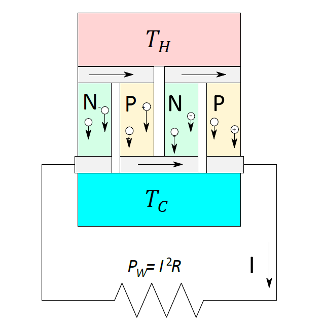
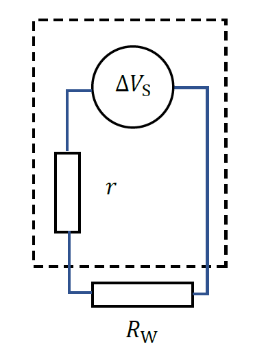

2 Thermoelectric Devices
Thermoelectric devices are small, solid-state devices used in small-scale power generation and refrigeration applications. A thermal gradient generates an electric current (TE generator, TEG) or a DC current is applied to remove heat from the cold side (TE cooler, TEC). Thermoelectric devices generally consist of a relative large number of thermocouples associated electrically in series and thermally in parallel.

Where would you find TECs/TEGs in practice? What are the advantages of TE devices compared to other energy technologies? What are their drawbacks? Note: include your answer in the Introduction/Theory
A thermocouple is formed by a n-type and a p-type thermoelement (in what is a called a leg or branch). A n-type leg or branch has length \(L_{n}\) and cross-section \(A_{n}\). The two legs are connected by a conductor at the hot end (\(T_{H}\)) that is assumed to have negligible electrical and thermal resistance. To close the circuit a load resistor, with a resistance \(R\), is connected between the cold end of the thermoelements (\(T_{C}\)).
The temperature difference \(T_{H} - T_{C} \equiv \Delta T > 0\) generates the Seebeck Voltage \(\Delta V = \left( S_{p} - S_{n} \right)\Delta T\) at the hot junction, where \(S_{p} > 0\) and \(S_{n} < 0\) are the Seebeck coefficients of the p-type and n-type thermoelements, respectively (Macia 2015; Engel and Reid 2013). The internal electrical resistance of the thermopile shown in Figure 2.1 is
\[r = 2\left( \frac{L_{n}}{\sigma_{n}A_{n}} + \frac{L_{p}}{\sigma_{p}A_{p}} \right) \tag{2.1}\]
where \(\sigma_{n}\) and \(\sigma_{p}\) are the legs conductivities.
Explain how Equation 2.1 has been derived. You need to recall connection of resistors in series and in parallel.
From an electrical point of view, a thermoelectric generator can be replaced with a voltage source and a resistor in series. Therefore, the entire device shown in Figure 2 is equivalent to the electric circuit shown in Figure 2.2.

The electrical current in the circuit is
\[I = \frac{\Delta V_{S}}{r + R} \tag{2.2}\]
Explain how Equation 2.2 is obtained.
The power delivered to external load is given by
\[W = \frac{{\Delta V_{S}^{2}}R}{(r + R)^{2}} \tag{2.3}\]
This can also be written as
\[W = I\Delta V_{S} - rI^{2} \tag{2.4}\]
where the first term can be interpreted as the electric power due to the Seebeck effect, and the second term is the power lost by Joule heating due to the internal resistance.
Recall how to calculate electrical power delivered to a resistor (this electrical power is converted back to heat but if the resistor is replaced by an electrical motor, it can be converted into work) and derive Equation 2.3 and obtain Equation 2.4.
Use what you have learned in calculus about finding a maximum (minimum) of a function and obtain the maximum output power for a TE device.
Assuming symmetry between thermocouple legs, derive the maximum output power in terms of the design parameters \(A,\ L\).
2.1 Thermoelectric Efficiency
In this experiment, all measurements will be in terms of power rather than energy. A thermoelectric generator is a type of heat engine, which means the efficiency is defined by the ratio
\[\eta = \frac{W}{\dot{Q}_{H}}\]
where \(W\) is the power delivered to the external load and \(\dot{Q}_{H}\) is the heat power (measured in W) entering the hot junction (source). However, some heat exits the engine at the cold junction (sink).
The overall Heat power \(\dot{Q}_{H} = \dot{Q}_{P} + \dot{Q}_{n}\) can be expressed in the form
\[\dot{Q}_{H}= IT_{H}\left( S_{p} - S_{n} \right) + \kappa\Delta T - \frac{I^{2}}{2}r\]
where the first term is the reversible heat release, and the last two terms are irreversible: Fourier diffusion and the Joule effect.
Assume there are no irreversible effects, show that the expression \(\eta = W/\dot{Q}_{H}\) will reduce to the Carnot limit \(\eta_{c} = \Delta T/T_{H}\).
A thermoelectric cooler’s performance can be analysed in a similar way to TEGs (as above). The difference lies in an external battery driving the electrons in the n-type leg and holes in the p-type leg away from the cold junction to the hot one. Hence, the heat power is determined by the opposite contributions stemming from Fourier flow and the Peltier effect. The electric power \(W_{C}\ \)consumed by the battery feeding the thermocouple is given by
\[W_{C} = I\Delta V + rI^{2}\]
The efficiency is expressed in terms of the coefficient of performance (COP)
\[\phi = \frac{Q_{C}}{W_{C}}\]
Note a COP of 0 is the maximum cooling temperature difference a TEC can reach. A COP of infinity is the theoretical maximum efficiency.